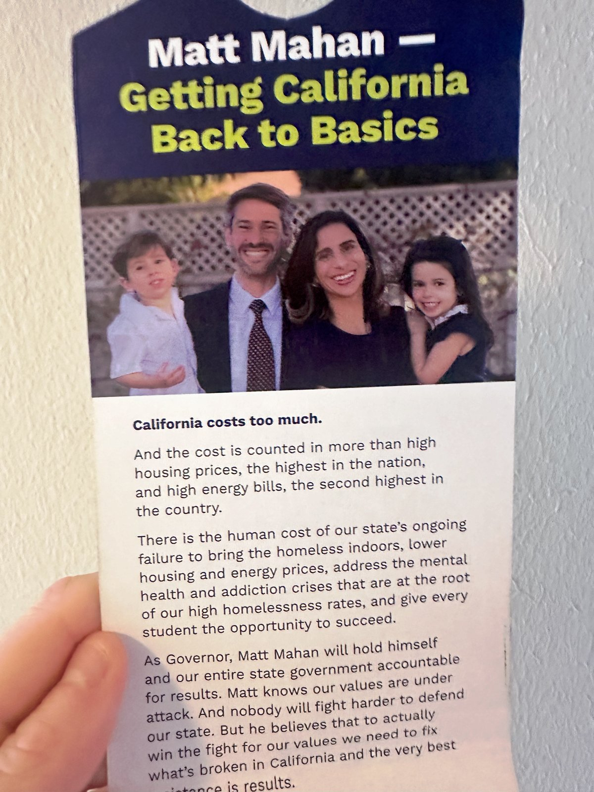
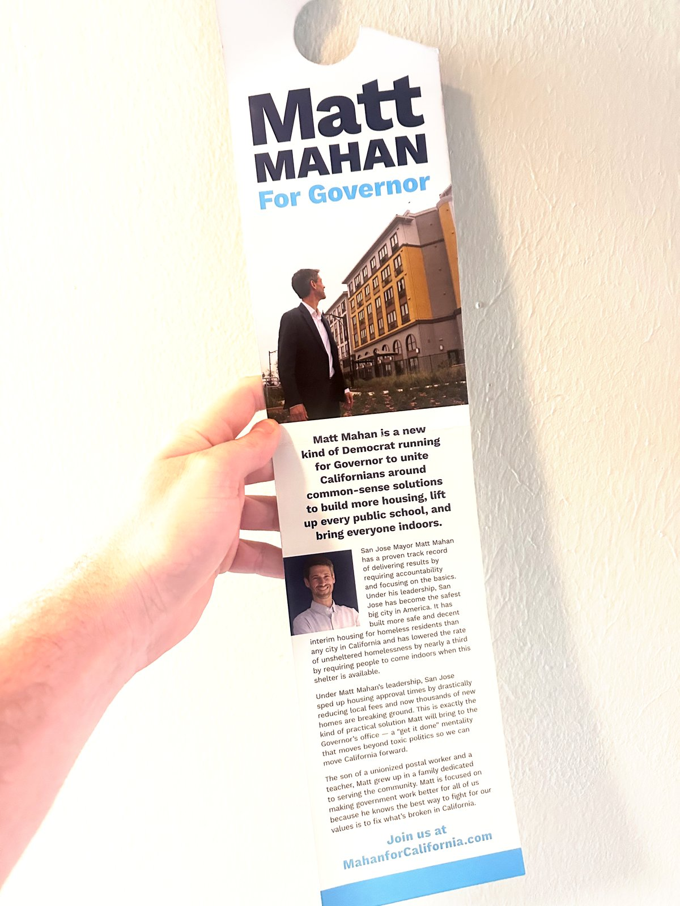

Sample Lit Drop Material
These are the flyers used during the first Mahan lit drop event in Palo Alto. Volunteers walked their assigned routes and left these at each doorstep.
📍 First Event — Palo Alto, CA

Lit drop flyer — the material left at each home during the Palo Alto volunteer event.

Flyer detail — a closer look at the campaign messaging used for neighborhood outreach.
Ready to make an impact?
See how the viral lit drop tool works and sign up for a route near your home.
Try the prototype →